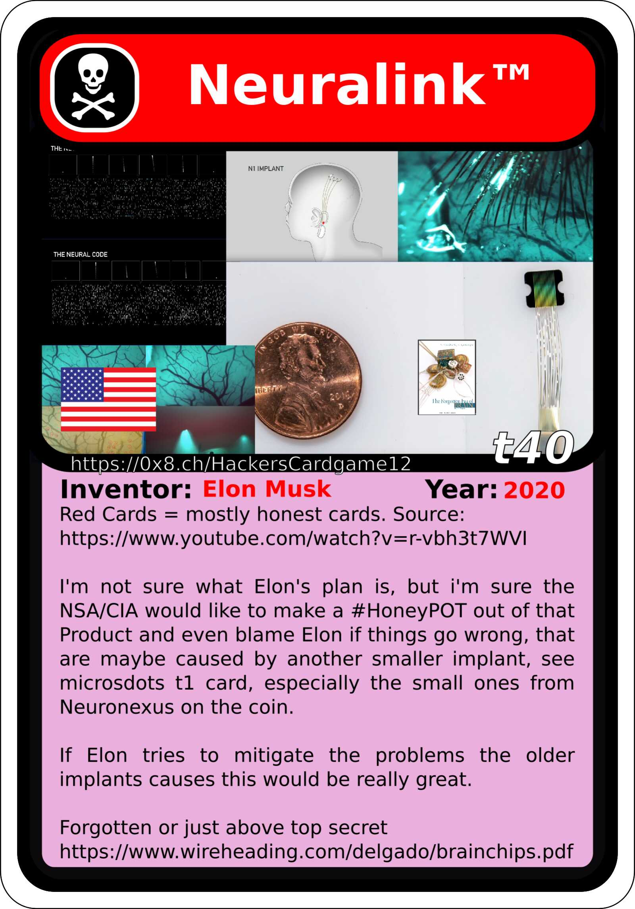
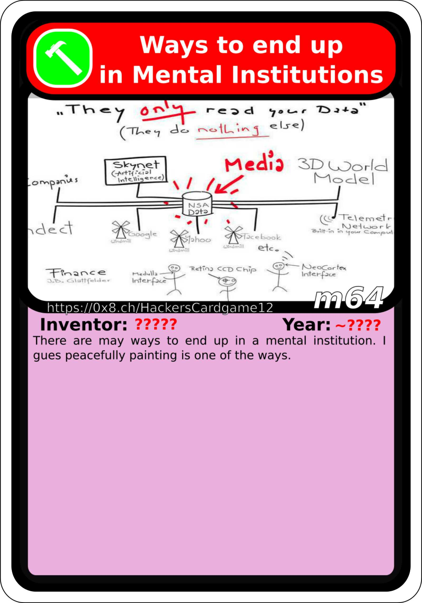
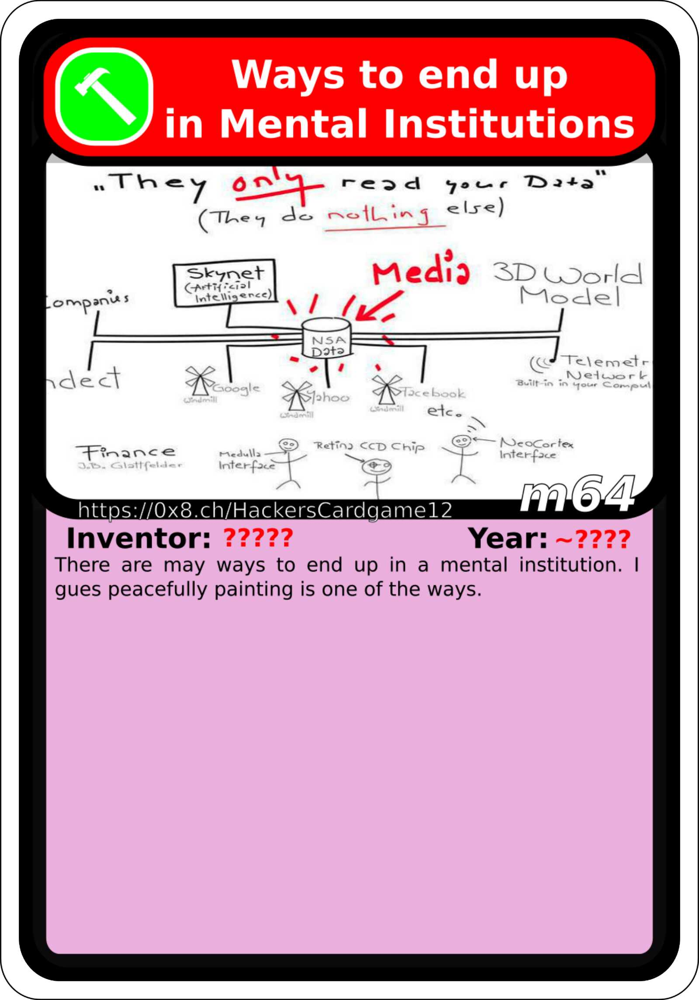

HackersCardgame.ch begrüsst $JüngerenChef um nicht geplanter Sündenbock sagen zu müssen
Namensnennung lassen wir mal weg, erstens wegen Persönlichkeitsrechten, zweitens kann man das Dokument mit $Variabeln dann als Vorlage brauchen
PRäREQUISITES:
- Linux
- pam_usb (github::braindef) [wenn Ihr das Locken des Computers versifft, und da wird die t40 Karte alles tun damit ihr das versifft, könnt ihr alles neu aufsetzen]
- eine gescheit PCIe WiFi Karte mit offener Firmware in den Laptop einbauen, aber sicher diese mit dem Closed Source Firmware BLOB ausbauen
Das HackersCardgame hat zur Zeit etwa 350 Karten, die wichtigsten Karten für den Moment wären
t1
,
eye1
,
t40 
,
t41  ,
t42
,
t42  ,
t43
,
t44
,
t45
,
t43
,
t44
,
t45  ,
m98
,
m98  ,
m99
,
m99  ... für alle die noch nicht so übel angegriffen mit elektronischer / psychologischer Kriegsführung
m64 
m65
... für alle die noch nicht so übel angegriffen mit elektronischer / psychologischer Kriegsführung
m64 
m65  lohnt es sich z.B. die Youtube Videos von Gunnar Kaiser zu schauen, er ist ein Philosope aus unserer Generation der ganz tollen Inhalt macht. Philosophie hilft der geistigen Gesundheit. Auch empfiehlt es sich sich zu Psychologie und Soziologie zu informieren oder z.B. das "Soziale Systeme"
a12
von Niklas Luhmann zu lesen. Luhmann war zwar in der Hitler Jugend, aber das war damals allenfalls auch einfach normal für Jugendliche und man lese besser sein Werke bevor man zu schnell urteilt über ihn.
lohnt es sich z.B. die Youtube Videos von Gunnar Kaiser zu schauen, er ist ein Philosope aus unserer Generation der ganz tollen Inhalt macht. Philosophie hilft der geistigen Gesundheit. Auch empfiehlt es sich sich zu Psychologie und Soziologie zu informieren oder z.B. das "Soziale Systeme"
a12
von Niklas Luhmann zu lesen. Luhmann war zwar in der Hitler Jugend, aber das war damals allenfalls auch einfach normal für Jugendliche und man lese besser sein Werke bevor man zu schnell urteilt über ihn.
Denn was wäre ein HackersCardgame ohne tollen Inhalt?
-
Das prä-2020-Neuralink / THS braucht ja irgend einen Uplink zu Satans Netzwerk, das geht meiner Meinung nach im Normalfall über irgendwelche Hardware Backdoors in Consumer Electronics.
-
Militärische Systeme hätten per Design default mässig Zugriff auf EndUser / Consumer Electronics
-
Um diese state of the art closed source Technologie zu schützen, bzw. um das wissen zu schützen, wird den Usern (Soldaten) eingeredet es sei die esotherische Hexerei und Zauberei von irgend einem Medikament oder einer Droge die sie "legitim" konsumieren dürfen. Das ist zeitgleich auch der CodeRED mit dem der User aus dem System gelöscht wird weil "er ist ein Drögeler" += Polizei
-
Die FillGun bzw. wie das ausserhalb der Schweizer Armee genannt wird das Fill-Device wäre die Crypto des gesammt Systems, mutmasslich mit verschiedenen Berechtigungsstufen
-
Die eSim wurde erfunden, um Geräte die nicht offiziell ein Telefon sind ans Netz anzubinden, bzw. Geräte wie z.B. Toaster (überzeichnet dargestellt) die gar nicht offiziell kommunizieren können.
-
Fill-Devices sind heute meist auch nur noch Software und keine hardware mehr (siehe z.B. Diffie Hellmann Key Exchange), auch so etwas wie eine eSIM
-
Als ÜbermittlungsSoldat übermittle ich natürlich Informationen, also mein THS / prä-2020-Neuralink hat eine "Jetzt (nach)sprechen!"-Funktion die Satan scheinbar vorallem dazu braucht mich dazu zu treiben sein Tourette Syndrom nachzusprechen, bzw. da es immer die selben Fluchwörterigen Sätze sind, könnte das auch dazu missbracht werden mir die Aufmerksamkeit zu rauben, wie z.B. in Windows ein Hintergrund Task, der Gehirn-CPU Leistung wegfrisst.
-
Die Hardware Backdoors können zwar auf das Betribssystem zugreifen, das Betriebssystem aber nicht auf die Hardware Backdoors
-
Diese Hardware Backdoors kommunizieren über etwas wie AX.25 (1990, ibm karte) bzw. heute eher etwas wie WiMAX
-
Der THS Firmware BLOB (Binary Large Object) [t41 Karte] hat ein Eigenleben, da scheinen vorgefertigte Algorithmen drauf zu sein, z.B. wenn ich an Neuralink oder THS denke, fängt das THS automatisch damit an sich selber abzustreiten. (technische Funktionsweise eines THS wäre ungefähr wie ein "Tamagotchi"
m65
 mit einem CPU Chip eines Tamagotchis ist etwa gross wie ein Daumennagel, MOS6502 und die Batterie hält ca. 1 Jahre, immer noch den "crappy old black and white display" hat, WHY?, jeoren wir sidn unwürdig meme) Technisch wäre das ein Spracherkennungs Algorithmus, der aber sein Eingangssignal nicht von einem Mikrophon hat sondern direkt aus z.B. dem Sprachzentrum. Dann erkennt ob über Implantat Technologie gesprochen wird und dan mit Gegen"beweisen" seinen User anfängt zu spammen. Ein Buddhist den ich kenne drückt es blumiger aus: "In einem Roten Spiegel kann man ein rotes Objekt nicht sehen" ich hatte irgend 5 Jahre bis ich das entschlüsselt hatte. Solche Infos sind meist geschützt, sie kommen als Puzzles oder Rätsel "ioerror: rubberhose example*
mit einem CPU Chip eines Tamagotchis ist etwa gross wie ein Daumennagel, MOS6502 und die Batterie hält ca. 1 Jahre, immer noch den "crappy old black and white display" hat, WHY?, jeoren wir sidn unwürdig meme) Technisch wäre das ein Spracherkennungs Algorithmus, der aber sein Eingangssignal nicht von einem Mikrophon hat sondern direkt aus z.B. dem Sprachzentrum. Dann erkennt ob über Implantat Technologie gesprochen wird und dan mit Gegen"beweisen" seinen User anfängt zu spammen. Ein Buddhist den ich kenne drückt es blumiger aus: "In einem Roten Spiegel kann man ein rotes Objekt nicht sehen" ich hatte irgend 5 Jahre bis ich das entschlüsselt hatte. Solche Infos sind meist geschützt, sie kommen als Puzzles oder Rätsel "ioerror: rubberhose example*
-
Das Firmware Eigenleben hab ich rausgefunden, als ich mal bei nachts und regen eine 50km Fahrradtour gemacht habe. Bei Regen können drohen wie die Ranger der Firma RUAG eher nicht so fliegen und auf mein THS zugreifen [1] und einen Uplink zu Satans Netzwerk providen und sämtliche Elektronik die ich dabei hatte in Aluminium eingewickelt so dass sie keinen Uplink beiten können
-
NDB/fub artikel
-
Hacker Ethics Artikel
-
Assagne playlist, hinweis auf kondum anziehen
-
ICH WURDE VOR 40 Semestern Immatrikuliert, also wenn ihr jünger seid und noch nicht ganz draus kommt ist das normal, als ich jünger war bin ich auch nicht draus gekommen
bei uns mitzumachen ist super geföhrlich, aber FALLS JA (farbrausch)...
wir hätten Verwendung für Menschen die noch ein bisschen Petzen spielen, aber um den @ioerror zu Zitieren "We need to comply with the law in order to continue publishing"
HAPPY HUNTING, dont risk your lives!!! JUST DONT RISK ANYTHING, NOT LIKE OUR SWISS TOAST SANDWICH IDIOT CUTIE!!!!
Sincerely, a true wanna be WhiteHat Hacker
Marc jr Landolt
eidg. dipl Informatiker HF
Neuenburgerstrasse 6
5004 Aarau
mail@marclandolt.ch
062 822 61 31 (mostly unplugged)
078 674 15 32 (mostly turned off and wrapped in tin foil)
Assannge:
Mind Control:
HAPPY HUNTING, dont risk your lives!!!
youtube playlist's
Demoscene:
https://www.youtube.com/watch?v=0FGVBE2M8ts&list=PLWsX0-AjlNWx0OSnVHjA61sKGRcaPpSIa
(das sieht so aus wie wenn es einfach Geblinke ist mit Musik, aber eigentlich ist es Digitale Kunst, und wie die meiste Kunst lebt diese von einer bestimmten Symbolik)